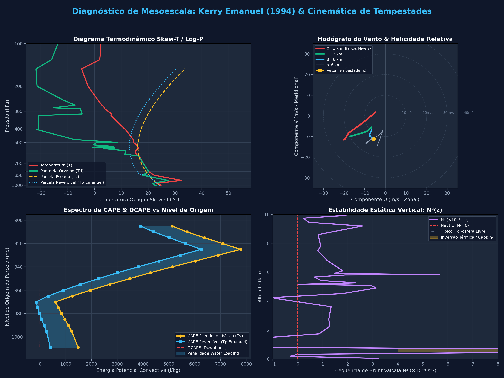

Roteiro Oficial de Apresentação para a Banca (FSC7116 - UFSC)
TEMPO TOTAL: 20 MINUTOS
00 - 03 min | Slides 1 & 2
Sinótica e Contexto do Caso Extremo
Conteúdo Obrigatório: Apresentação do evento severo escolhido (24/12/1995 em SBPA), imagens de satélite/radar e cartas de reanálise de 500 hPa (cavado baroclínico e difluência a jusante) e 850 hPa (Baixa do Chaco e Jato de Baixos Níveis advectando ar tropical quente e úmido).
Frase de Abertura: "A configuração de 500 e 850 hPa em 24/12/1995 estabeleceu um acoplamento clássico de difluência em altos níveis e advecção subtropical em baixos níveis, gerando um ambiente de altíssima energia potencial sobre o Rio Grande do Sul."
03 - 07 min | Slides 3 & 4
As Três Sondagens e Interpretação Física de CAPE, CIN e θe
Conteúdo Obrigatório: Comparação dos 3 perfis no Skew-T (12/12 pós-frontal estável, 23/12 moderado, 24/12 explosivo). Formalismo de CAPE e CIN, e análise do gradiente vertical ∂θe/∂z < 0 demonstrando instabilidade convectiva severa.
$$\text{CAPE} = \int_{p_{\text{EL}}}^{p_{\text{LFC}}} R_d (T_{\rho, p} - T_{\rho, e}) \, d\ln p \quad | \quad \text{24/12: MUCAPE} = 7808.7\text{ J/kg, CIN} = 0\text{ J/kg}$$
07 - 10 min | Slide 5
Temperatura de Densidade (Tρ) e Algoritmo de Kerry Emanuel
Conteúdo Obrigatório: Explicação dos resultados do wyoming.f citando rigorosamente o livro Atmospheric Convection (Emanuel, 1994, Cap. 4 & 6) e o recurso oficial MIT OCW 12.811. Demonstrar como o termo de carregamento de hidrometeoros (-r_l) reduz a flutuabilidade real.
$$T_\rho = T \left( \frac{1 + r_v/\epsilon}{1 + r_t} \right) \approx T (1 + 0.608\, r_v - r_l - r_i) \quad \implies \quad \text{CAPE cai de 7808 para 6120 J/kg}$$
10 - 14 min | Slides 6 & 7
Variáveis do Capítulo 2: θv, Brunt-Väisälä (N²), Razão de Mistura e PW
Conteúdo Obrigatório: Perfis verticais de temperatura potencial virtual (θv), frequência de Brunt-Väisälä (N²), razão de mistura (atingindo 22 g/kg em 925 hPa!), Água Precipitável (PW > 52 mm) e DCAPE (1149 J/kg). Mostrar que o pico de N² próximo à superfície agiu como um "capping lid" acumulador de energia.
$$N^2 = \frac{g}{\theta_v}\frac{\partial \theta_v}{\partial z} \quad | \quad \text{PW} = \frac{1}{g}\int r(p)\, dp \quad | \quad \text{DCAPE} = 1149\text{ J/kg (Risco de Microbursts)}$$
14 - 17 min | Slide 8
Cinemática: Hodógrafo, Jato em Baixos Níveis (JBN) e Helicidade (SRH)
Conteúdo Obrigatório: Análise do hodógrafo curvo, identificação do núcleo do JBN em 925 hPa com vento de 44 nós (22.6 m/s), cisalhamento bulk 0-6 km de 28.7 m/s e SRH 0-3 km de 245 m²/s² suportando convecção supercelular rotatória.
$$\text{SRH} = -\int_0^h \left[ (u - c_x)\frac{\partial v}{\partial z} - (v - c_y)\frac{\partial u}{\partial z} \right] dz \quad | \quad \Delta \mathbf{V}_{0-6} = 28.7\text{ m/s}$$
17 - 20 min | Slides 9 & 10
Conclusão: Síntese dos Gatilhos de Mesoescala & Fechamento para a Banca
Conteúdo Obrigatório: Síntese integrada (Instabilidade Extrema + Rompimento do Capping Lid + Suporte Cinemático do JBN). Classificação como Supercélulas de Alta Precipitação (HP) com rajadas descendentes severas. Abertura formal para a arguição da banca examinadora.
Tabela Oficial cape.out - Algoritmo de Kerry Emanuel (1994)
CASO 24/12/1995 (12Z)
Esta tabela reproduz fielmente as 20 camadas de origem calculadas pelo código wyoming.f (e wyoming.py).
Observe como a Área Positiva Reversível (Rev. PA) é substancialmente menor que a Pseudoadiabática (P.A. PA) devido à retenção e arrasto dos hidrometeoros condensados (water loading).
| Origem p (mb) |
Rev. PA (J/kg) |
P.A. PA (J/kg) |
Rev. NA / CIN (J/kg) |
P.A. NA / CIN (J/kg) |
Rev. CAPE (J/kg) |
P.A. CAPE (J/kg) |
DCAPE (J/kg) |
Redução por Carga (%) |
| 1009.0 (Sfc) | 608.2 | 1667.5 | 206.1 | 187.9 | 402.0 | 1479.7 | 0.0 | -63.5% |
| 995.0 | 458.6 | 1423.4 | 208.6 | 195.7 | 249.9 | 1227.7 | 3.2 | -67.8% |
| 990.0 | 370.8 | 1298.3 | 214.9 | 202.3 | 155.9 | 1096.1 | 1.1 | -71.4% |
| 985.0 | 287.1 | 1175.6 | 221.4 | 208.7 | 65.7 | 967.0 | 1.0 | -75.6% |
| 980.0 | 213.1 | 1054.8 | 231.5 | 215.3 | -18.4 | 839.6 | 1.0 | -79.8% |
| 975.0 | 148.6 | 939.5 | 236.6 | 221.7 | -88.0 | 717.8 | 0.9 | -84.2% |
| 970.0 | 107.1 | 837.8 | 259.9 | 227.9 | -152.8 | 609.9 | 0.8 | -87.2% |
| 965.0 | 513.6 | 1442.5 | 196.9 | 189.2 | 316.7 | 1253.3 | 1.0 | -64.4% |
| 960.0 | 1071.2 | 2111.6 | 159.2 | 154.0 | 912.0 | 1957.6 | 1.2 | -49.3% |
| 955.0 | 1696.7 | 2829.5 | 125.1 | 121.8 | 1571.5 | 2707.7 | 1.4 | -40.0% |
| 950.0 | 2373.5 | 3586.9 | 94.1 | 92.5 | 2279.4 | 3494.4 | 1.7 | -33.8% |
| 945.0 | 3081.5 | 4347.0 | 65.9 | 65.4 | 3015.6 | 4281.6 | 1.9 | -29.1% |
| 940.0 | 3838.2 | 5165.5 | 39.9 | 39.8 | 3798.3 | 5125.7 | 2.2 | -25.7% |
| 935.0 | 4628.2 | 6032.0 | 17.8 | 17.8 | 4610.4 | 6014.1 | 2.5 | -23.3% |
| 930.0 | 5435.4 | 6903.9 | 4.5 | 4.5 | 5430.9 | 6899.4 | 2.7 | -21.3% |
| ★ 925.0 (JBN Max) |
6247.2 |
7781.5 |
0.0 |
0.0 |
6247.2 |
7781.5 |
3.0 |
-19.7% (-1534 J/kg) |
| 920.0 | 5630.3 | 7081.7 | 0.0 | 0.0 | 5630.3 | 7081.7 | 3.0 | -20.5% |
| 915.0 | 5023.8 | 6376.9 | 0.0 | 0.0 | 5023.8 | 6376.9 | 3.0 | -21.2% |
| 910.0 | 4413.3 | 5697.3 | 0.0 | 0.0 | 4413.3 | 5697.3 | 2.9 | -22.5% |
| 905.0 | 3896.3 | 5121.5 | 0.0 | 0.0 | 3896.3 | 5121.5 | 2.8 | -23.9% |
Interpretação Físico-Matemática (Kerry Emanuel 1994, Seções 4.3 e 6.3):
1. Nível de Máxima Instabilidade: O pico de CAPE ocorre no nível do JBN (925 mb), onde o MUCAPE atinge 7781.5 J/kg com CIN = 0 J/kg.
2. Penalidade por Carga de Água: A diferença de 1534.3 J/kg entre o cálculo pseudoadiabático e o reversível decorre diretamente do termo -r_l na temperatura de densidade \(T_\rho = T(1 + 0.608\, r_v - r_l)\). O peso dos hidrometeoros retidos atua como freio gravitacional na corrente ascendente.
Gráficos Integrados de Mesoescala (Gerados por plot_meso.py)
